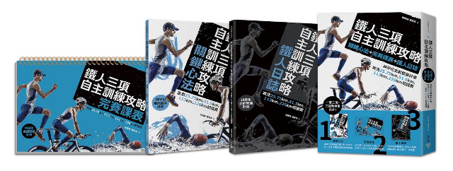

法國麵包與《鐵人攻略》

有不少讀者反映《鐵人三項自主訓練攻略》(之後簡稱《鐵人攻略》)這本書好生硬，全書都是課表，很不親切，難以咀嚼。
的確。相比之下，前一本《挑戰自我的鐵人三項訓練書》比較軟多了。但我想生硬的作品還是要出版，像《丹尼爾博士的跑步方程式》這種教科書等級的書更是硬到擲地有聲。
生硬的書有其存在的必要性。這讓我想到法國麵包。法國人老是鄙視我們常吃的那種長方體的可以切片用來夾肉做三明治的軟麵包。「麵包」這一個詞的法語「pain de mie」，pain在英文是疼痛的意思，讓人不禁想像在法國人眼中的麵包是要硬到打人會痛。但法國人就是喜歡吃硬式麵包。
《鐵人攻略》的確是一部又冷又硬的作品，一堆表格、一長串的數字和課表說明。但我認為還是有人會需要，有人會喜歡。只是很少人給我回饋。
今天看到有位網有在部落格上留言說這部作品對他的幫助，看完他的留言真是覺得非常受用。他的回饋給我很大的激勵。
==
國峰老師你好：
當初會找到這邊是因為在游泳上遇到瓶頸，在划距與划頻上迷失了，當時的我已經買了第一本鐵人三項訓練書，目標是完成第一場半超鐵113完賽(之前僅參加過標準半程)，但對於課表也是一知半解，執行結果也不甚理想。在比賽前第二本再版書《挑戰自我的鐵人三項訓練書》也入手了，不管執行得如何在兩本書的魔力下無痛完賽。當時按照建議準備第二場113(依照書中的建議用前一場比賽的結果來規劃訓練比重長度)，此時《鐵人攻略》入手了，第二場113也次無痛完賽(可以開車回楊梅就算無痛)。第三場113終於把攻略本好好研讀一番，雖然不是很懂每一個訓練項目，但是我知道只要按著「菜單」做，就沒問題了，只是這次我吃的是《鐵人攻略》中的226菜單，過程中除了部分單車、跑步有打8折其他都吃得下。這次當然也是無痛完賽！終於心中冒出一個想法，226菜單我都吃得下，那來一場226吧！今年10/17的Lava 226超鐵賽我順利完賽了，初馬初超鐵一次完成！這次也是無痛完賽!!!
謝謝你，讓我有機會完成這輩子的一個夢想！
讓我知道把書上的每一筆訓練做得確實，沒有到不了的終點！
==
我也衷心地謝謝這位讀者願意啃食我們用心烘焙出的這部又乾又硬的作品。